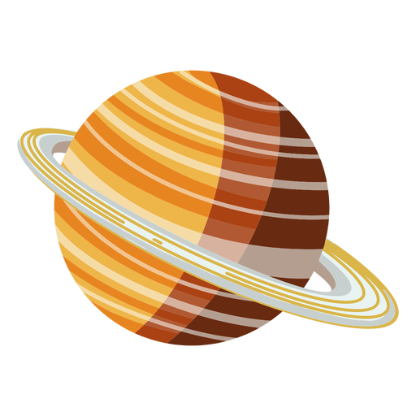

SATURNO
Saturno é o sexto planeta a partir do Sol e é o segundo maior planeta do Sistema Solar, ficando atrás apenas de Júpiter. Suas dimensões são 9 vezes maiores que as da Terra. Devido à sua composição, é conhecido também como gigante gasoso e destaca-se pela beleza do sistema de anéis que o circunda, os quais são formados a partir de fragmentos de rocha e gelo.
